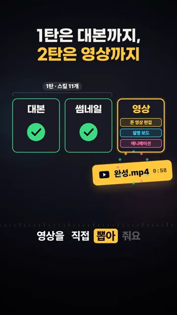
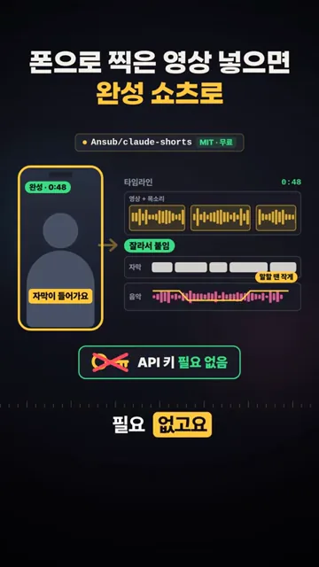
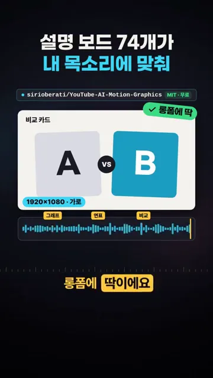
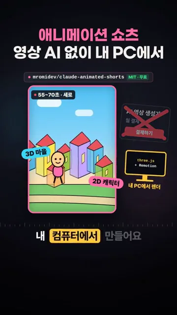
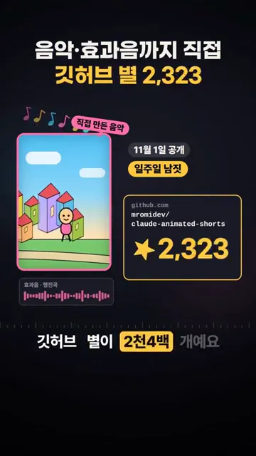
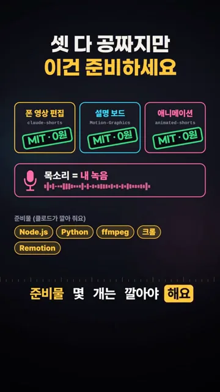

폰으로 찍은 영상이 완성 쇼츠가 돼요
이 채널의 1탄에서 소개한 Claude 스킬 11개는 대본, 제목, 썸네일까지만 만들었어요. 2탄의 스킬 세 개는 그다음 단계인 영상을 직접 뽑아요. 아래 화면에서 대본과 썸네일 칸에는 체크가 붙어 있고, 새로 켜진 '영상' 칸 안에 폰 영상 편집, 설명 보드, 애니메이션 세 줄이 들어가요. 그 결과물로 0:58짜리 완성.mp4가 떨어지는 모습이에요.

첫 번째 스킬: claude-shorts
첫 번째는 Ansub/claude-shorts예요. 폰으로 세로로 찍은 영상을 넣으면 편집을 통째로 맡아 줘요. 화면 왼쪽 폰 화면의 길이가 1분 12초에서 48초로 줄고, 오른쪽 타임라인에는 세 줄이 보여요. 맨 위 '영상 + 목소리' 줄에서 말이 막힌 곳과 빈 구간을 잘라 붙이고, 그 아래에 자막 줄과 음악 줄이 깔려요. 음악 줄에는 '말할 땐 작게'라는 표시가 붙어 있어요.

목소리에 맞춰 움직이는 설명 보드 74개
두 번째는 sirioberati/YouTube-AI-Motion-Graphics예요. 막대 그래프, 연표, 비교 카드처럼 움직이는 설명 보드가 74개 들어 있어요. 아래 화면에서 위쪽은 A와 B를 나란히 놓은 비교 카드 보드예요. 그 밑의 파란 파형이 내 목소리이고, 파형 위에 '그래프', '연표', '비교' 표시가 시간 순서로 붙어 있어요. 그 말을 하는 순간에 해당 보드가 움직인다는 뜻이에요.

AI 영상 생성기 없이 만드는 애니메이션 쇼츠
영상이 '제일 미친 것'이라며 가장 힘줘 소개하는 건 세 번째 mromidev/claude-animated-shorts예요. 3D로 지은 알록달록한 마을 안에서 2D 캐릭터가 움직이는 1분 안팎의 세로 이야기 영상을 만들어요. 아래 화면 오른쪽을 보면 '월 결제'가 붙은 AI 영상 생성기 카드에 X가 쳐져 있어요. 그 대신 'three.js + Remotion'이 적힌 모니터와 '내 PC에서 렌더' 표시가 있어요.

음악과 효과음도 스킬이 직접 지어서 넣어요. 다음 화면에는 '직접 만든 음악'과 '효과음·행진곡' 트랙이 보이고, 오른쪽에 공개일과 깃허브 별 수가 있어요. 11월 1일에 공개돼 일주일 남짓 지났고, 별은 2,323개로 찍혀 있어요. 말로는 '2천4백 개'라고 해서 화면 숫자와 조금 달라요.

셋 다 공짜지만 준비할 것
마지막 화면은 세 스킬을 나란히 놓고 정리해요. 세 카드 모두 'MIT · 0원' 도장이 찍혀 있어요. 그 아래 두 가지 조건이 붙어요. 하나는 '목소리 = 내 녹음'이고, 다른 하나는 준비물 목록이에요. 준비물 칸에는 '클로드가 깔아 줘요'라는 작은 설명이 달려 있어요.

영상에 나온 내용을 표로 모으면 이래요.
| 스킬 | 저장소 | 넣는 것 | 나오는 것 |
|---|---|---|---|
| 폰 영상 편집 | Ansub/claude-shorts | 폰으로 찍은 세로 영상 | 군더더기를 자르고 자막·음악을 깐 완성 쇼츠 |
| 설명 보드 | sirioberati/YouTube-AI-Motion-Graphics | 내 목소리 | 목소리에 맞춰 움직이는 1920×1080 가로 보드 |
| 애니메이션 쇼츠 | mromidev/claude-animated-shorts | 이야기와 내 목소리 | 3D 마을 속 2D 캐릭터가 나오는 55~70초 세로 영상 |